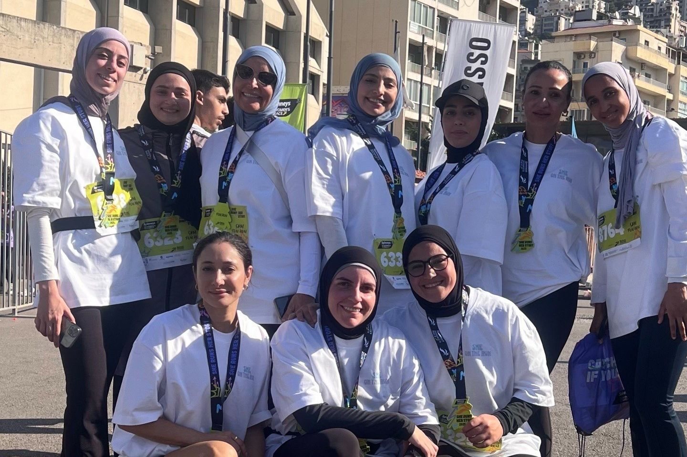

للنساء فقط · بيروت
She
On the Run
مجتمع للنشاط والعافية للنساء فقط، تكون فيه الحركة نقطة البداية.
لماذا أسّست
SheOnTheRun
بدأ الأمر بسؤال كنت أسمعه باستمرار: «كيف أبدأ الجري؟»
لم تكن هناك فعلاً مجتمعات جري في لبنان للنساء اللواتي يرغبن ببساطة في الجري للمتعة — معظم الأندية كانت تركّز على التدريب والأداء والمنافسة. فأنشأت المساحة التي تمنّيت وجودها: مكاناً تأتي إليه النساء، ويركضن بوتيرتهن، ويأخذن الأمور بهدوء، ويستمتعن، ويشعرن بالأمان. لا ضغط، لا منافسة، لا أحكام.
ثم انتشر الجري، وظهرت الأندية في كل مكان. لكن SheOnTheRun كان قد أصبح شيئاً أكبر: مجتمعاً للنشاط والعافية للنساء فقط، تكون فيه الحركة نقطة البداية للتواصل والثقة والنمو. وإلى جانب الجري هناك اليوغا والبيلاتس وورش العمل الإبداعية والفن والخلوات.
تحرّكي
جري جماعي بوتيرة هادئة تسمح بالحديث. يوغا وبيلاتس. كل ما يُخرجك من الكرسي ويعيدك إلى جسدك.
تواصلي
تصلين لا تعرفين أحداً، وتغادرين وفي هاتفك أرقام جديدة. هذا الجزء يحدث من تلقاء نفسه.
تطوّري
ورش عمل وفن وخلوات وتحديات — أشياء تفسح لك مساحة خارج جداول الآخرين.
تعالي وتحرّكي معنا
جميع الوتيرات مرحّب بها. إن كنت تستطيعين المشي لثلاثين دقيقة، يمكنك المجيء إلى أول جري لك.
جولات الجري والصفوف والفعاليات القادمة
المواعيد بتوقيت بيروت. كل ما مضى يختفي من هذه القائمة من تلقاء نفسه.